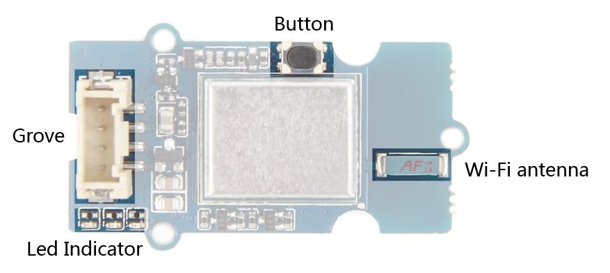
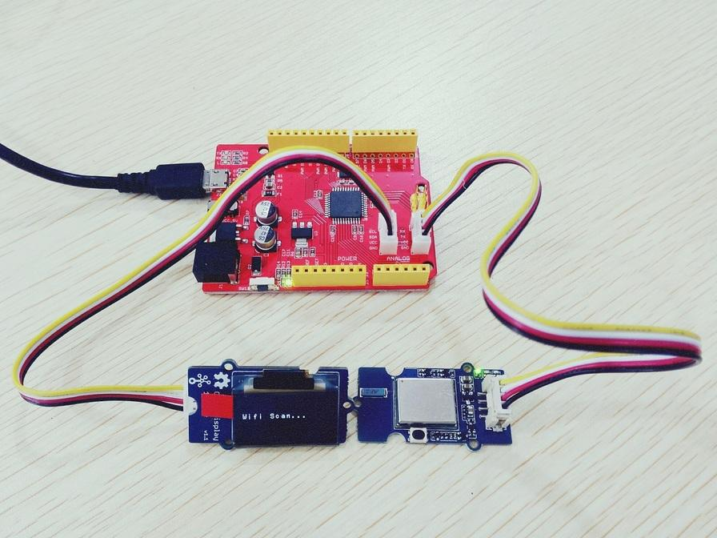
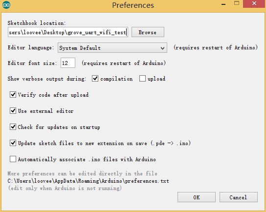
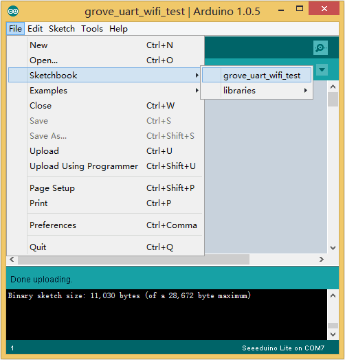
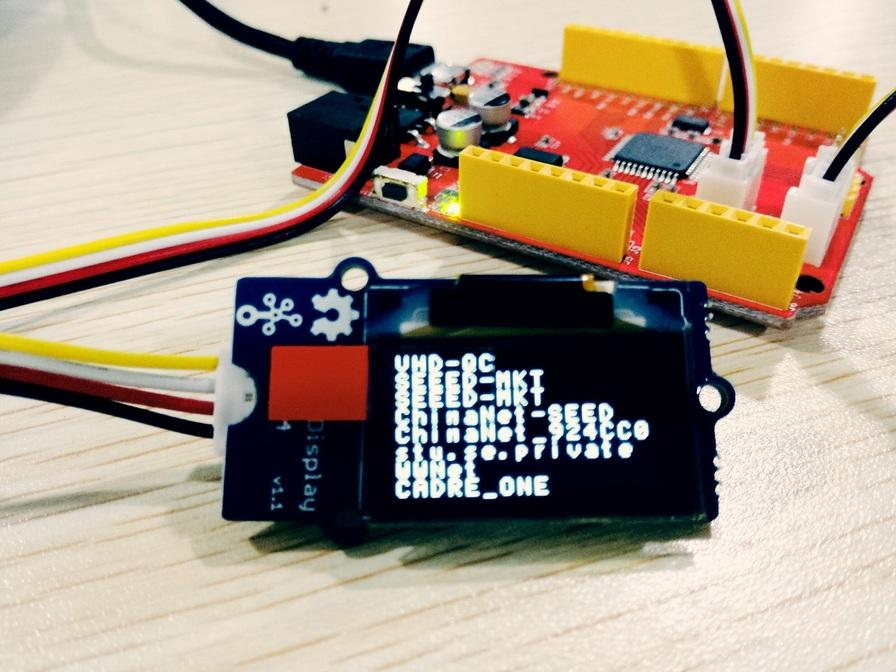
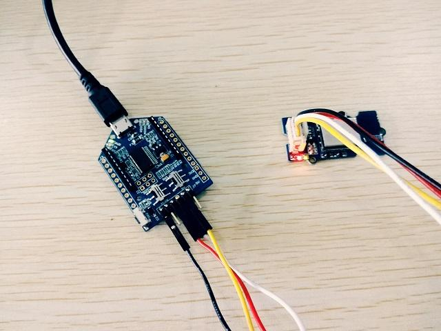
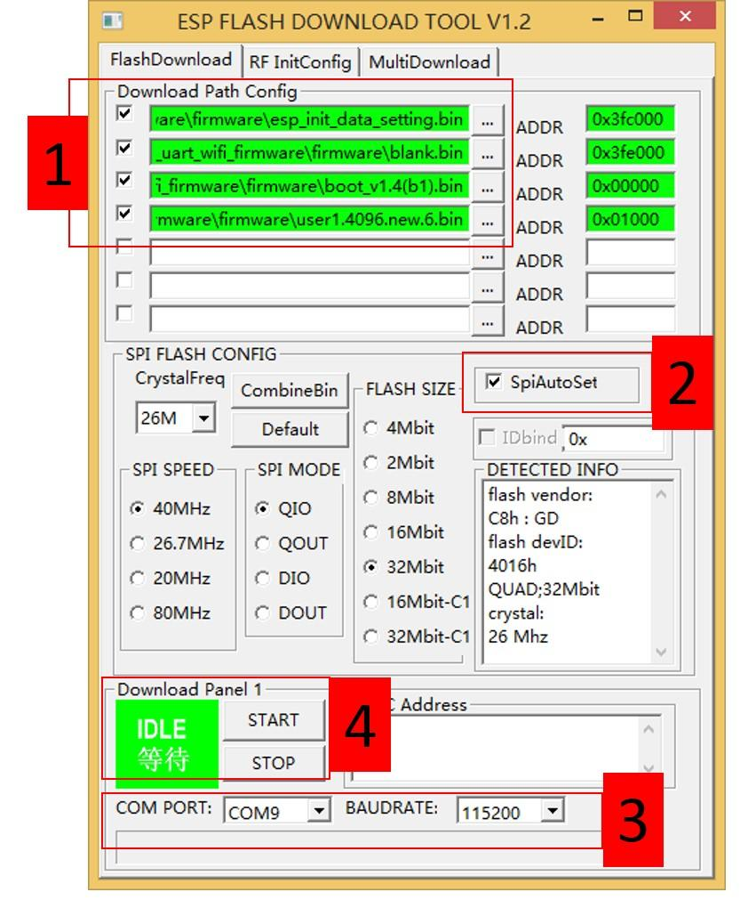
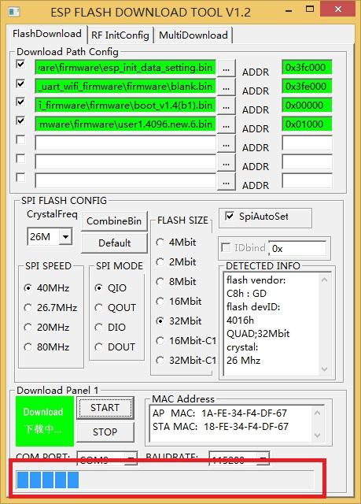
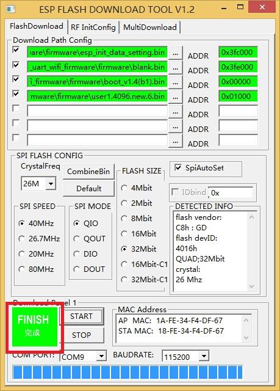

Grove - UART WiFi is a serial transceiver module featuring the ubiquitous ESP8266 IoT SoC. With integrated TCP/IP protocol stack, this module lets your microcontroller interact with WiFi networks with only a few lines of code.
Each ESP8266 module comes pre-programmed with an AT command set firmware, meaning you can send simple text commands to control the device.
The SoC features integrated WEP, WPA/WPA2, TKIP, AES, and WAPI engines, can act as an access point with DHCP, can join existing WiFi networks and has configurable MAC and IP addresses.

Here is block diagram of Grove - UART WiF module which consists of following parts.

The ESP8266 was designed to achieve very low energy consumption with patented power management technology that reduces non-essential functions and regulates sleep patterns. There are five power states:
The Real-time clock can be programmed to wake the ESP8266 within a specified period of time.
The higher the DTIM period, the longer the device may sleep and therefore the more power the device may potentially save.
To meet the power requirements of mobile applications and wearable electronics, to reduce the overall power consumption, the PA output power can be customised in the firmware.
After this section, you can make Grove - UART WiFi run with only few steps.
Now we are making a demo for wireless access point(AP) scan which require following modules.
If this is your first time using Seeeduino Lite, please refer to Seeeduino Lite's wiki
Seeeduino Lite is compatible with Arduino which works as simple as Arduino.
If this is your first time using Arduino, Please put hand on here to start your Arduino journey.
Seeeduino Litegot Grove socket for connecting two module mentioned above: Grove - OLED Display 1.12 and Grove - Uart Wifi.
They are:
As shown below:

Click here to download testing code and decompress it to any folders(e.g. Drive D or desktop）
Now you need simple configurations for Arduino sketchbook.
Launch Arduino IDE and click File>Preferences and add absolute location for downloaded testing code at Sketchbook location .

After configurations, please restart Arduino, click File>Sketchbook and choose grove_uart_wifi_wiki after which testing code will show up.

Click Tools>Board to choose Seeeduino Lite and select respective serial port.
Now click Upload(CTRL+U) to burn testing code. Please refer to here for any error prompt and you can also add comment on forum
After upload completed, you can see AP identifier on OLED display.Following AP identifiers are found in our office.

Our module board got a firmware burned into it for factory settings, you can burn other firmware to it if you like. Click here to download source code of factory setting firmware.
1. Connect one end of Grove-Jump converting cable with grove socket on Grove - Uart Wifi and connect other end with UartSBee V5 which shown as following.

2. Then connecting cables like following figure:
Now make sure you have downloaded burning software and bin file of firmware. Let us start burning to board.

1. Choose desired files from firmware bin file downloaded.
2. Check SpiAutoSet.
3. Choose respective COM port and BAUDRATE.


Using Espressif Systems ESP8266 AT Instruction Set Version 0.24 with SeeedStudio additions.
| Command | Description |
|---|---|
| AT | Test AT startup |
| AT+RST | Restart module |
| AT+GMR | View version info |
| AT+GSLP | Enter deep-sleep mode |
| ATE | Enable/Disable AT commands echo |
| AT+RESTORE | Factory Reset |
| AT+UART | UART configuration (Deprecated) |
| AT+UART_CUR | UART current configuration (Won't save to Flash) |
| AT+UART_DEF | UART default configuration (Save to Flash) |
| AT+SLEEP | Sleep mode |
| AT+RFPOWER | Set RF TX Power |
| AT+RFVDD | Set RF TX Power according to VDD33 |
| Command | Description |
|---|---|
| AT+CWMODE | WIFI mode (Deprecated) |
| AT+CWMODE_CUR | Current WIFI mode (Won't save to Flash) |
| AT+CWMODE_DEF | Default WIFI mode (Save to Flash) |
| AT+CWJAP | Connect to AP (Deprecated) |
| AT+CWJAP_CUR | Current Connect to AP (Won't save to Flash) |
| AT+CWJAP_DEF | Default Connect to AP (Save to Flash) |
| AT+CWLAP | Lists available APs |
| AT+CWQAP | Disconnect from AP |
| AT+CWSAP | Configure softAP (Deprecated) |
| AT+CWSAP_CUR | Configure current softAP (Won't save to Flash) |
| AT+CWSAP_DEF | Configure default softAP (Save to Flash) |
| AT+CWLIF | List stations connected to softAP |
| AT+CWDHCP | Enable/Disable DHCP (Deprecated) |
| AT+CWDHCP_CUR | Current Enable/Disable DHCP (Won't save to Flash) |
| AT+CWDHCP_DEF | Default Enable/Disable DHCP (Save to Flash) |
| AT+CWAUTOCONN | Connect to AP automatically when power on |
| AT+CIPSTAMAC | Set station mac address (Deprecated) |
| AT+CIPSTAMAC_CUR | Set station mac address (Won't save to Flash) |
| AT+CIPSTAMAC_DEF | Set station mac address (Save to Flash) |
| AT+CIPAPMAC | Set softAP mac address (Deprecated) |
| AT+CIPAPMAC_CUR | Set softAP mac address (Won't save to Flash) |
| AT+CIPAPMAC_DEF | Set softAP mac address (Save to Flash) |
| AT+CIPSTA | Set station IP address (Deprecated) |
| AT+CIPSTA_CUR | Set station IP address (Won't save to Flash) |
| AT+CIPSTA_DEF | Set station IP address (Save to Flash) |
| AT+CIPAP | Set softAP IP address (Deprecated) |
| AT+CIPAP_CUR | Set softAP IP address (Won't save to Flash) |
| AT+CIPAP_DEF | Set softAP IP address (Save to Flash) |
| AT+CWSTARTSMART | Start SmartConfig |
| AT+CWSTOPSMART | Stop SmartConfig |
| Command | Description |
|---|---|
| AT+CIPSTATUS | Get connection status |
| AT+CIPSTART | Establish TCP connection or register UDP port |
| AT+CIPSEND | Send data |
| AT+CIPSENDEX | Send data, if <length> or "\0" is met, data will be sent |
| AT+CIPSENDBUF | Write data into TCP-send-buffer |
| AT+CIPBUFRESET | Reset segment ID count |
| AT+CIPBUFSTATUS | Check status of TCP-send-buffer |
| AT+CIPCHECKSEQ | Check if a specific segment is sent or not |
| AT+CIPCLOSE | Close TCP/UDP connection |
| AT+CIFSR | Get local IP address |
| AT+CIPMUX | Set multiple connections mode |
| AT+CIPSERVER | Configure as server |
| AT+CIPMODE | Set transmission mode |
| AT+SAVETRANSLINK | Save transparent transmission link to Flash |
| AT+CIPSTO | Set timeout when ESP8266 runs as TCP server |
| AT+CIUPDATE | Upgrade firmware through network |
| AT+PING | Ping an IP address or hostname |
| Command | Description |
|---|---|
| AT+LEDON | Turn the blue LINK led on |
| AT+LEDOFF | Turn the blue LINK led off |